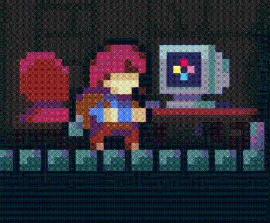
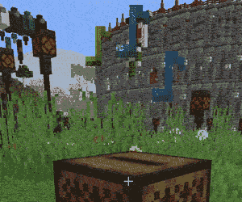

Terminal
Deja notas y desencripta mensajes personales en el Terminal Celeste

Musiquita
Me paso el día con música, y aunque soy de las que repiten las mismas 10 canciones en bucle he hecho una lista con ejemplos de los estilos que me gustan. ¡Haz click para abrir una canción aleatoria de esa lista!